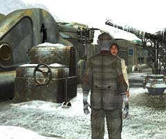
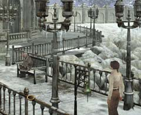

| 概要 | 地図 | |
| 淡いヒント集 | ヒント集 | 的確なヒント集 |
| 攻略最短ルート | Syberia 攻略へ |
|

無事コムコルツグラッドから脱出できたあなたたちは、アラルバッドの駅に到着するだろう。 あなたは外へ出て、機関車のゼンマイを巻けばよい。それが終わったら、オスカーにそのことを伝えよう。すると、ホテルから支配人が現れて、あなた宛の荷物が届いていることを伝えてくる。 荷物はテレビのそばに置いてある。中には「カラクリのマンモス」が入っている。このアイテム自体には特に意味はないようだ。だが、これを見たあなたはハンスの求めるシベリアというものにひどく惹かれるに違いない。 荷物を受け取ったあなたに、ヘレナから電話がかかってくるだろう。バーへ行き、彼女と会おう。彼女は、ハンスについての情報を教えてくれるはずだ。 この内容も重要なのだが、聞きそびれていけないのはその後である。別れ際にジェイムスの言う言葉が、あなたの次にすべき行動を教えてくれるからだ。

ジェイムスは桟橋へ行くように言ったはずだ。そこへ行ってみよう。ベンチに一人の男性が座っている。この人物があなたの探していたハンスである。 |
| 概要 | 地図 | |
| 淡いヒント集 | ヒント集 | 的確なヒント集 |
| 攻略最短ルート | Syberia 攻略へ |